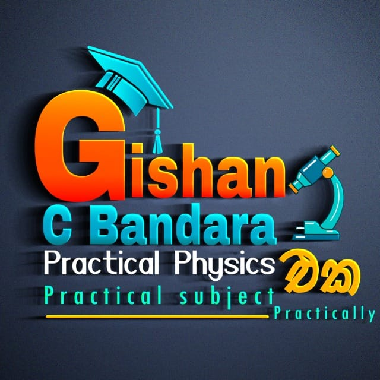

කෘෂි හා ආහාර තාක්ෂණය - O/L
මෙම පිටුවේ, සාමාන්ය පෙළ විද්යා විෂය සඳහා විවිධ මූලාශ්රයන් හා කෙටි සටහන් සොයාගත හැක.
අධ්යාපනයේ නව අත්දැකීම් ලබාගන්න. අපගේ WhatsApp කණ්ඩායමට එකතුවන්න!
WhatsApp එකට එක්වන්නමෙම පිටුවේ, සාමාන්ය පෙළ විද්යා විෂය සඳහා විවිධ මූලාශ්රයන් හා කෙටි සටහන් සොයාගත හැක.
අධ්යාපනයේ නව අත්දැකීම් ලබාගන්න. අපගේ WhatsApp කණ්ඩායමට එකතුවන්න!
WhatsApp එකට එක්වන්න